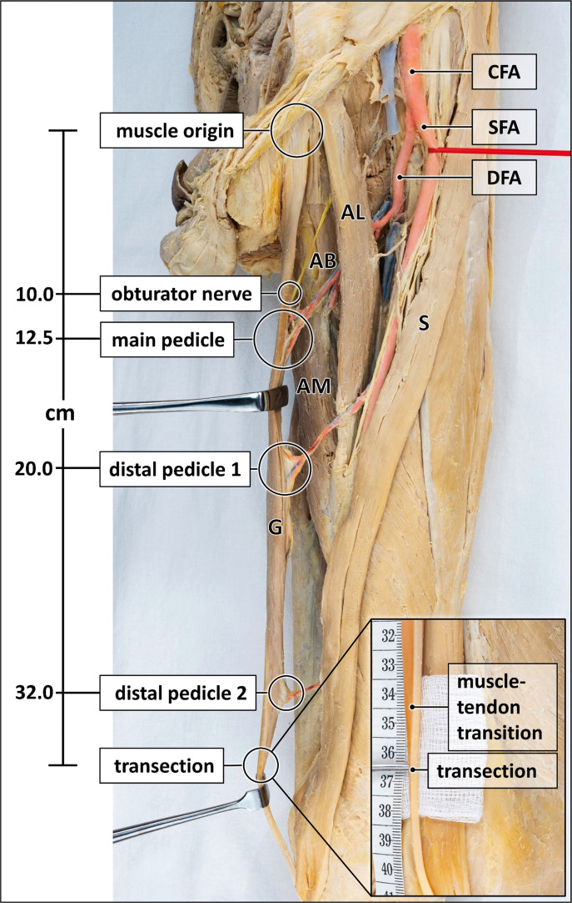
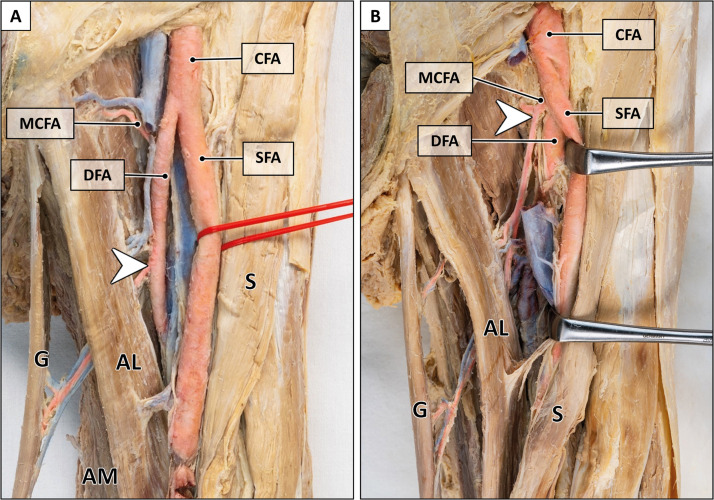

「筋肉ごと皮膚を挙げれば、遅延法（ディレイ＝皮弁を段階的に切って血流を鍛える古典的な手法）を使わずに、大きな皮弁を一度に移せる」という筋皮弁（きんぴべん＝musculocutaneous flap）の考え方を提示した論文です。著者はこの方法に薄筋（はっきん＝グラシリス、gracilis。太ももの内側にある細長い筋肉）を用いました。論文のタイトルそのものが、この方法を「遅延法（the method of delay）に代わる、即時（immediate）で大胆な（heroic）方法」と宣言しています。ヒトで報告された最初期の筋皮弁のひとつとされ、後年に広く使われる薄筋皮弁（グラシリス皮弁）や、多くの筋皮弁の出発点に位置づけられます。
背景 ― 「遅延法（ディレイ）」の時代
血流の乏しい面（腱や骨、人工物が露出した部分）は、皮膚だけを移す植皮（しょくひ）では覆えず、血流を持った皮膚の塊＝皮弁（ひべん）で覆う必要があります。しかし1970年代初頭に大きな皮弁を挙げる主な方法だった乱走型皮弁（らんそうがたひべん＝random pattern flap。特定の血管に頼らず、皮膚の中の細かい血管網だけで生きる皮弁）は、大きく取ると先端の血流が届かず壊死（えし＝組織が死ぬこと）しやすいという弱点がありました。
この弱点を補うために広く行われていたのが遅延法（ちえんほう＝delay、ディレイ）です。皮弁を一度に挙げてしまわず、数日から数週間かけて少しずつ切り込みを入れ、周囲からの血流を断って皮弁を「血流不足に慣れさせ、鍛える」処置をしてから移す方法です。安全性は高まりますが、手術を何回にも分け、長い期間を要するのが難点でした。
そこで、遅延を繰り返さずに、より大きく確実な皮弁を一度に挙げる方法が求められていました。その答えのひとつとして提示されたのが、この論文の「筋皮弁法（musculo-cutaneous flap method）」です。
この論文がしたこと
この原著にはPubMedに抄録が登録されていません（No abstract available）。そのため、本ページでは原著の主張を、論文のタイトルと術式名、および後年の文献で整理された事実の範囲にとどめて記述します。
タイトルは「The musculo-cutaneous flap method: an immediate and heroic substitute for the method of delay」＝「筋皮弁法 ― 遅延法に代わる、即時で大胆な方法」です。ここに主張が凝縮されています。すなわち、皮膚を単独で挙げるのではなく、その下の筋肉ごと一体で挙げる。そうすれば筋肉自身が持つ血管が上の皮膚まで栄養するため、遅延（delay）という段階的な準備を省いて、一度に（immediate）、思い切って（heroic）大きな皮弁を移せる、という考え方です。
著者はこの筋皮弁法に薄筋（グラシリス）を用いました。後年の文献では、この報告はヒトで記載された最初期の筋皮弁のひとつであり、のちに標準となる薄筋皮弁（グラシリス皮弁）の原点とされています。
解剖と手技の要点
ここから先は、原著の抄録が存在しないため、その後の解剖学的研究で整理されてきた一般的な知見です。薄筋（グラシリス）は、太ももの内側にある細長い内転筋（ないてんきん＝脚を内側へ閉じる筋肉）で、恥骨（ちこつ）から始まり、膝の内側で脛骨（けいこつ＝すねの骨）へ付きます。細くて表層にあり、犠牲にしても機能への影響が比較的小さいため、皮弁のドナー（提供部位）として扱いやすい筋肉とされます。
血流の主体は、内側大腿回旋動脈（ないそくだいたいかいせんどうみゃく＝medial circumflex femoral artery、深大腿動脈から分かれる血管）から出る1本の太い血管柄（けっかんへい＝血管の茎）で、おおむね恥骨結節の約10cm下で薄筋に入るとされます。この太い主柄に加えて、遠位（膝側）に細い副血管柄が複数あるのが特徴で、これは「1本の優位な柄＋いくつかの小さな柄」という血行パターン（Mathes-Nahai分類のType II）にあたります。
この構造こそが筋皮弁を成り立たせる鍵です。主となる血管柄1本を残しさえすれば、薄筋という筋肉と、その上に乗った皮膚（皮島＝ひとう）をひとかたまりに、血流を保ったまま挙上できます。皮膚だけの乱走型皮弁と違い、筋肉の中を走る安定した血管で皮膚まで養えるため、遅延なしに大きな皮弁が挙げられる、という発想につながります。


結果
この原著にはPubMedに抄録が登録されておらず（No abstract available）、症例数や生着率などの具体的な成績を、抄録から確認することはできません。したがって本ページでは、成績に関する数値は記載しません。
確認できるのは、論文のタイトルが示す主張までです。すなわち、筋肉ごと皮膚を挙げる「筋皮弁法」により、遅延法（delay）という段階的な準備を省いて、一度に大きな皮弁を移せる、という概念が提示されたことです。用いられた筋肉は薄筋（グラシリス）でした。
意義 ― 「遅延法からの解放」と筋皮弁時代の入り口
この報告は、皮膚だけでなく筋肉ごと血流付きで運ぶ「筋皮弁」という考え方を、遅延法に代わる一期的（一度で済む）な再建として明確に打ち出した点で、時代の転換点とされます。安全のために手術を何回にも分けていた発想から、大きな組織を一度に確実に運ぶ発想への切り替えです。
1970年代を通じて、McCraw（マクロー）らが全身のさまざまな筋肉について筋皮弁の血流が届く範囲を体系的に整理し、多くの筋皮弁が実用化されていきました。薄筋についても、Harii（はりい）らが1976年に薄筋の遊離皮弁（血管ごと切り離して顕微鏡下でつなぎ直す皮弁）や、表情筋の再建に使う機能的な薄筋移植を報告したとされます。
薄筋皮弁（グラシリス皮弁）そのものは、血管柄が比較的安定し、採取した側の機能障害が少ないことから、会陰部（えいんぶ）や下肢、顔面の再建などで広く使われるワークホース（働き者。日常的に頼れる皮弁の意）へと育っていきました。「筋肉の中を走る血管を皮膚のために使う」というこの論文の発想は、のちの穿通枝皮弁（せんつうしひべん＝筋肉を極力残し、皮膚へ立ち上がる枝を追いかけて挙げる皮弁）へと続く流れの源流のひとつとも位置づけられています。
この論文の要点
- 皮膚を単独で挙げるのではなく、下の筋肉ごと一体で挙げれば、筋肉自身の血管が上の皮膚まで養うため、大きな皮弁を一度に移せる ― という筋皮弁（musculocutaneous flap）の考え方を提示した。
- 論文のタイトルどおり、これは遅延法（delay＝段階的に皮弁を鍛える古典的手法）に代わる、即時（immediate）で大胆な（heroic）方法として打ち出された。
- この筋皮弁法には薄筋（グラシリス、大腿内側の細長い内転筋）が用いられた。
- 原著にはPubMed上に抄録がなく（No abstract available）、症例数・生着率などの具体的な成績は本ページでは記載しない。
- ヒトで報告された最初期の筋皮弁のひとつとされ、後年に広く使われる薄筋皮弁（グラシリス皮弁）や多くの筋皮弁、さらに穿通枝皮弁へと続く発想の出発点に位置づけられる。
用語ミニ辞典
- 筋皮弁（きんぴべん）
- 筋肉と、その上に乗った皮膚をひとかたまりにして、血流を保ったまま移す皮弁。筋肉の中を走る安定した血管が皮膚まで養うため、大きく確実な皮弁を一度に挙げられる。この論文が方法として明確に提示した。
- 薄筋（グラシリス）
- 太ももの内側にある細長い内転筋（脚を内側へ閉じる筋肉）。恥骨から始まり膝の内側で脛骨へ付く。犠牲にしても機能への影響が比較的小さく、皮弁のドナーに向く。この論文が筋皮弁法に用いた筋肉。
- 遅延法（delay／ディレイ）
- 皮弁を一度に挙げず、数日〜数週間かけて少しずつ切り込みを入れて周囲の血流を断ち、皮弁を血流不足に慣れさせて鍛えてから移す古典的な手法。安全だが、手術が複数回に分かれ長い期間を要する。この論文はこれに代わる方法を提示した。
- 乱走型皮弁（random pattern flap）
- 特定の名前のある血管に頼らず、皮膚の中の細かい血管網だけで生きる皮弁。大きく取ると先端まで血流が届かず壊死しやすいため、遅延法で補う必要があった。
- 内側大腿回旋動脈
- 深大腿動脈から分かれ、太ももの内側を回る動脈。薄筋の主たる栄養血管とされ、おおむね恥骨結節の約10cm下で薄筋に入る1本の太い血管柄を出す。
- 血管柄（けっかんへい）
- 皮弁への血流の通り道となる血管の茎。薄筋では「1本の太い主柄＋遠位に複数の細い副柄」という構成をとり、主柄1本を残せば筋肉と皮膚をまとめて生かせる。
- 遊離皮弁 / 有茎皮弁
- 遊離皮弁は血管ごと切り離し、顕微鏡下で移植先の血管に縫い直す皮弁。有茎皮弁は血管の茎でつながったまま移す皮弁。薄筋皮弁は後年どちらの形でも使われるようになった。
- ワークホース
- 働き者の馬の意で、再建外科で日常的に最もよく使う、頼れる皮弁を指す言い回し。薄筋皮弁は血管柄が安定し採取部の障害が少ないことから、会陰部・下肢・顔面などの再建でワークホースになったとされる。
本ページは形成外科の学習・参照を目的とした編集部によるオリジナルの日本語解説で、原著（英語）の逐語訳・全文転載ではありません。正確な内容・数値・図は必ず上記リンク先の原著をご確認ください。
掲載している図は、原著の図ではありません。原著の図は出版社が著作権を持ち転載できないため、同じ術式・同じ解剖を扱った無料公開（オープンアクセス／CC BY）論文の図を、出典とライセンスを明記して引用しています。